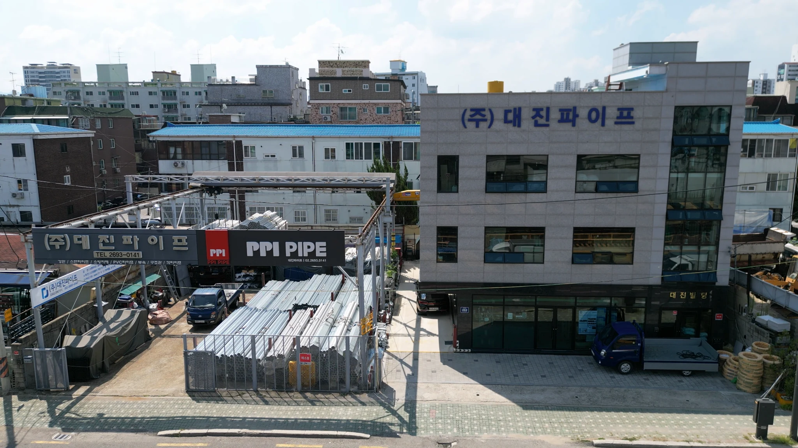
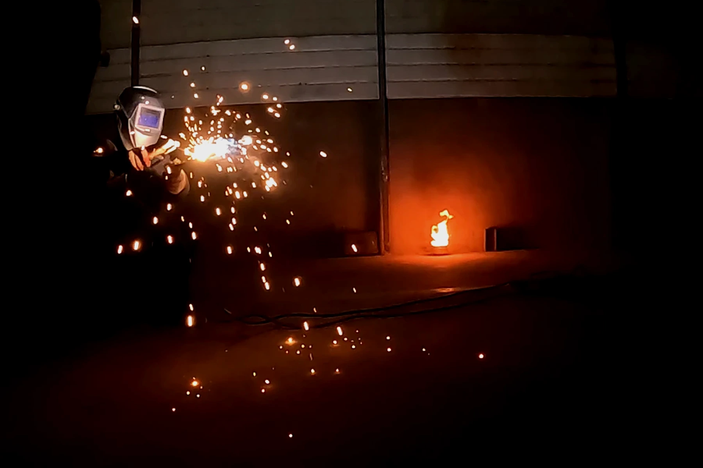

JOOSATLAS / INDEPENDENT RESEARCH PLATFORM
Research that survives
contact with the field.
A public record of how spatial evidence moves between surveying, image geometry, industrial reality and accountable explanation.
FIELDPhysical datum
IMAGEDeclared geometry
AUDITTraceable claim
STATUSCase 001 under review
01
PREMISE
Not every precise-looking line is a measurement.
JoosAtlas begins with a refusal: an image is not allowed to certify its own interpretation.
Observation, reference and audit are treated as different roles. The distinction is methodological, but it is also ethical: a result should be presented only at the level the evidence can support.
That principle connects the laboratory, the industrial yard and public communication. Each environment imposes a different test on the same question: what makes a claim defensible?
60-SECOND EXPERIMENT
The image error stays at two pixels.
The ground consequence does not.
Choose a viewing distance. The same two-pixel displacement is carried through a selected local inverse geometry to show why range matters.
Open the full Pixel Consequence Lab ↗IMAGE2 px
→
GROUND
LOCAL GROUND EFFECT5.6 cm
At 7 m, the selected local scale is approximately 27.8 mm/px.
02
SELECTED WORK
CASE 001 / SPATIAL EVIDENCE
From a surveyed primitive
to an auditable boundary.
A physical geometry is established before the image enters the chain. A camera model carries the boundary into the frame; the observed response is returned to object space; the final discrepancy is audited with its sign intact.
Explore the full case
FIELD RECORDOne installation. Multiple observation roles.
DISCLOSURESelected theory and object-space evidence
OPEN CASE ↗PHYSICAL PRIMITIVE1.5 m nominal radius
GENERATED BOUNDARY5.5 m nominal radius
OBSERVATION DESIGNC · R · D / 7 · 9 · 12 m
PUBLIC STATUSPaper under review

THE PERSON BEHIND THE ATLAS
Researcher.
Operator.
Builder.
Joo Yong-Hoe works where rigorous spatial measurement, industrial operation and professional community meet.
He is a Ph.D. Candidate in Yonsei University’s School of Civil & Environmental Engineering, President of Daejin Pipe Co., Ltd., and President of ACERS.
RESEARCHYonsei University · GIS Remote Sensing and Surveying Laboratory
INDUSTRYPresident · Daejin Pipe Co., Ltd.
COMMUNITYPresident · ACERS
03
THREE WORLDS
One working standard across three environments.
JoosAtlas is shaped by academic research, industrial operation and professional community—not as separate biographies, but as mutually testing contexts.

RESEARCH / 01
Yonsei University
Ph.D. Candidate
School of Civil & Environmental Engineering
GIS Remote Sensing and Surveying Laboratory

INDUSTRY / 02
Daejin Pipe Co., Ltd.
President
Industrial operations, materials and field implementation.

COMMUNITY / 03
ACERS
President
Alumni of Civil, Environmental Resilience Safety
Yonsei Graduate School of Engineering

INDUSTRIAL REALITY
Operations are spatial systems.
Inventory, access, lifting, storage, safety and delivery occupy measurable space. The operating environment is not a backdrop to JoosAtlas; it is where methods encounter consequence.
DAEJIN PIPE CO., LTD.OPERATING SITE / AERIAL RECORD

PERSONAL FIELD RECORD
The researcher is also
an operator.
The welding scene records Joo Yong-Hoe working inside the industrial environment he also manages. JoosAtlas grows from that dual position: rigorous measurement on one side, operational consequence on the other.
About the operating practiceHANDS-ON INDUSTRIAL PRACTICEJOO YONG-HOE
04
CURRENT COORDINATES
A growing atlas, labeled by evidence and maturity.
Nothing is presented as complete before its status can be stated precisely.
001Spatial EvidencePaper under review↗
002Fixed-Camera MetrologyIn development
LABIndustrial Digital TwinExploratory
TOOLSInteractive MeasurementPlanned